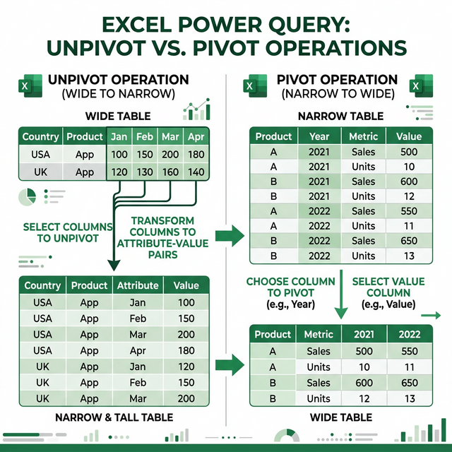

Chuyển đổi cấu trúc dữ liệu trong Power Query
Thành thạo các kỹ thuật thay đổi hình dạng dữ liệu: Transpose, Pivot, Unpivot, Group By và Fill Down/Up.
7.1 Transpose (Chuyển đổi hàng ↔ cột)
Transpose biến các hàng thành cột và ngược lại — hàng đầu tiên trở thành tiêu đề cột, cột đầu tiên trở thành tiêu đề hàng.
Cách thực hiện
- Trong Power Query Editor, tab Transform → Transpose
- Dữ liệu sẽ được xoay 90°
- Thường cần thêm bước: Transform → Use First Row as Headers
Ví dụ
Trước Transpose:
| Quý 1 | Quý 2 | Quý 3 | Quý 4 | |
|---|---|---|---|---|
| Doanh thu | 100 | 150 | 200 | 180 |
| Chi phí | 80 | 90 | 120 | 100 |
Sau Transpose:
| Kỳ | Doanh thu | Chi phí |
|---|---|---|
| Quý 1 | 100 | 80 |
| Quý 2 | 150 | 90 |
| Quý 3 | 200 | 120 |
| Quý 4 | 180 | 100 |
7.2 Unpivot Columns (Chuyển cột thành hàng)
Unpivot là một trong những tính năng mạnh nhất của Power Query — chuyển đổi bảng chéo (crosstab) thành dạng danh sách phẳng, phù hợp cho phân tích Pivot Table.

3 loại Unpivot
| Loại | Mô tả | Khi nào dùng |
|---|---|---|
| Unpivot Columns | Unpivot các cột đã chọn | Khi biết chính xác cột nào cần unpivot |
| Unpivot Other Columns | Giữ các cột đã chọn, unpivot phần còn lại | Khi số cột không cố định (khuyến nghị!) |
| Unpivot Only Selected Columns | Chỉ unpivot các cột đã chọn, cố định | Khi cần kiểm soát chính xác |
Ví dụ Unpivot
Trước Unpivot (bảng chéo theo tháng):
| Sản phẩm | Tháng 1 | Tháng 2 | Tháng 3 |
|---|---|---|---|
| Laptop | 50 | 60 | 45 |
| Chuột | 200 | 180 | 220 |
Sau Unpivot Other Columns (giữ cột "Sản phẩm"):
| Sản phẩm | Attribute | Value |
|---|---|---|
| Laptop | Tháng 1 | 50 |
| Laptop | Tháng 2 | 60 |
| Laptop | Tháng 3 | 45 |
| Chuột | Tháng 1 | 200 |
| Chuột | Tháng 2 | 180 |
| Chuột | Tháng 3 | 220 |
// Giữ cột "Sản phẩm", unpivot tất cả cột còn lại
= Table.UnpivotOtherColumns(
PreviousStep,
{"Sản phẩm"}, // Cột giữ lại
"Tháng", // Tên cột Attribute
"Số lượng" // Tên cột Value
)7.3 Pivot Column (Chuyển hàng thành cột)
Pivot là ngược lại của Unpivot — chuyển các giá trị duy nhất trong một cột thành nhiều cột riêng biệt:
- Chọn cột chứa giá trị sẽ trở thành tiêu đề cột mới
- Tab Transform → Pivot Column
- Chọn Values Column: cột chứa giá trị cho các ô
- Chọn Aggregate Function: Sum, Count, Min, Max, Don't Aggregate
Ví dụ
Trước Pivot (dạng danh sách):
| Nhân viên | Quý | Doanh số |
|---|---|---|
| An | Q1 | 100 |
| An | Q2 | 150 |
| Bình | Q1 | 90 |
| Bình | Q2 | 120 |
Sau Pivot (cột "Quý", giá trị "Doanh số", Sum):
| Nhân viên | Q1 | Q2 |
|---|---|---|
| An | 100 | 150 |
| Bình | 90 | 120 |
7.4 Group By (Nhóm dữ liệu)
Group By nhóm các dòng theo giá trị của một hoặc nhiều cột và tính toán tổng hợp:
Cách thực hiện
- Tab Transform → Group By
- Chế độ Basic: Nhóm theo 1 cột, 1 phép tính
- Chế độ Advanced: Nhóm theo nhiều cột, nhiều phép tính
Các hàm aggregate
| Hàm | Mô tả | Ví dụ |
|---|---|---|
| Sum | Tổng giá trị | Tổng doanh thu theo chi nhánh |
| Average | Trung bình | Lương trung bình theo phòng ban |
| Min / Max | Giá trị nhỏ nhất / lớn nhất | Đơn hàng nhỏ nhất / lớn nhất |
| Count Rows | Đếm số dòng | Số nhân viên mỗi phòng ban |
| Count Distinct Values | Đếm giá trị duy nhất | Số sản phẩm khác nhau |
| All Rows | Giữ tất cả dòng dạng Table | Tạo sub-table cho mỗi nhóm |
// Nhóm theo PhongBan, tính tổng lương và đếm nhân viên
= Table.Group(PreviousStep, {"PhongBan"}, {
{"TongLuong", each List.Sum([Luong]), type number},
{"SoNhanVien", each Table.RowCount(_), Int64.Type}
})7.5 Fill Down / Fill Up
Điền giá trị từ ô có dữ liệu xuống (hoặc lên) các ô trống bên dưới (hoặc bên trên) — rất hữu ích khi dữ liệu có các ô merged/merged cell:
Ví dụ Fill Down
| Trước | Sau Fill Down |
|---|---|
| Phòng IT | Phòng IT |
| (trống) | Phòng IT |
| (trống) | Phòng IT |
| Phòng KD | Phòng KD |
| (trống) | Phòng KD |
Cách thực hiện
- Chọn cột cần fill
- Tab Transform → Fill → Down (hoặc Up)
7.8 Group By nâng cao: Lấy Last Item trong nhóm
Khi Group By với All Rows, bạn có thể lấy dòng cuối cùng (hoặc bất kỳ dòng nào) trong mỗi nhóm:
// Lấy giao dịch cuối cùng của mỗi khách hàng
= Table.Group(Source, {"MaKH"}, {
{"LastTransaction", each Table.Last(
Table.Sort(_, {{"NgayGD", Order.Ascending}})
), type record}
})
// Lấy dòng có giá trị Max trong nhóm
= Table.Group(Source, {"PhongBan"}, {
{"TopEmployee", each Table.Max(_, "DoanhThu"), type record}
})7.9 DistinctCount qua Group By
Đếm số giá trị duy nhất (DistinctCount) — tương đương COUNTIFS(UNIQUE) trong Excel:
// Đếm số khách hàng duy nhất mỗi tháng
= Table.Group(Source, {"Thang"}, {
{"SoKhachHang", each List.Count(List.Distinct([MaKH])), Int64.Type},
{"SoGiaoDich", each Table.RowCount(_), Int64.Type}
})7.10 Row Number per Group (Đánh số dòng theo nhóm)
Thêm số thứ tự reset về 1 cho mỗi nhóm — rất hữu ích cho ranking trong nhóm:
// Cách 1: Group By + AddIndexColumn + ExpandAll
let
Grouped = Table.Group(Source, {"PhongBan"}, {
{"AllData", each Table.AddIndexColumn(_, "STT", 1, 1)}
}),
Expanded = Table.ExpandTableColumn(Grouped, "AllData",
{"HoTen", "Luong", "STT"})
in Expanded
// Cách 2: Dùng Table.AddColumn trực tiếp
= Table.AddColumn(Source, "STT_TrongNhom",
each Table.RowCount(
Table.SelectRows(Source,
(r) => r[PhongBan] = [PhongBan] and r[HoTen] < [HoTen]
)
) + 1
)7.11 Advanced Unpivot & Pivot
Ngoài Unpivot cơ bản, có nhiều tình huống phức tạp hơn:
Unpivot Columns vs Unpivot Other Columns
| Phương pháp | Khi nào dùng | Ưu điểm |
|---|---|---|
| Unpivot Columns | Chọn đúng các cột cần unpivot | Kiểm soát chính xác |
| Unpivot Other Columns | Chọn cột KHÔNG unpivot (giữ lại) | Bền vững khi thêm cột mới |
Multi-Level Headers (Header nhiều tầng)
Bảng Excel thường có header 2-3 tầng (VD: "Doanh thu" → "Q1", "Q2"). Cách xử lý:
// Bước 1: Transpose để lật ngang → dọc
= Table.Transpose(Source)
// Bước 2: Fill Down để lấp header tầng 1 xuống
= Table.FillDown(Transposed, {"Column1"})
// Bước 3: Merge 2 cột header thành 1
= Table.CombineColumns(Filled,
{"Column1", "Column2"},
Combiner.CombineTextByDelimiter(" | "),
"CombinedHeader")
// Bước 4: Transpose lại
= Table.Transpose(Combined)
// Bước 5: Promote Headers → Unpivot
= Table.PromoteHeaders(TransposedBack)Cross-Tab → Flat Table
Bảng chéo (Cross-Tab) là bảng tóm tắt cần chuyển về dạng chi tiết:
// Bảng gốc:
// Q1 Q2 Q3 Q4
// HCM 100 200 150 180
// HN 80 120 100 140
// Unpivot Other Columns (giữ cột đầu tiên)
= Table.UnpivotOtherColumns(Source,
{"ChiNhanh"}, "Quy", "DoanhThu")
// Kết quả:
// ChiNhanh | Quy | DoanhThu
// HCM | Q1 | 100
// HCM | Q2 | 200
// HN | Q1 | 80
// ...Bài tập 7.1: Unpivot bảng doanh thu theo tháng
Mục tiêu: Chuyển bảng chéo thành dạng danh sách
- Tạo bảng Excel:
Sản phẩm T1 T2 T3 T4 T5 T6 Laptop 50 60 45 70 55 65 Chuột 200 180 220 190 210 240 Bàn phím 100 90 110 105 95 120 - Mở Power Query
- Chọn cột "Sản phẩm" → Transform → Unpivot Other Columns
- Đổi tên cột "Attribute" → "Tháng", cột "Value" → "Số lượng"
- Kết quả: 18 dòng (3 sản phẩm × 6 tháng)
- Close & Load
Bài tập 7.2: Group By tính tổng hợp
Mục tiêu: Sử dụng Group By để tổng hợp dữ liệu
- Tạo bảng đơn hàng:
ChiNhanh SanPham SoLuong DoanhThu HCM Laptop 10 150000000 HCM Chuột 50 17500000 HN Laptop 8 120000000 HN Bàn phím 30 36000000 DN Chuột 40 14000000 HCM Bàn phím 25 30000000 - Mở Power Query → Transform → Group By
- Chọn Advanced
- Group by: ChiNhanh
- Thêm các cột:
- "TongDoanhThu" — Operation: Sum — Column: DoanhThu
- "TongSoLuong" — Operation: Sum — Column: SoLuong
- "SoSanPham" — Operation: Count Distinct Values — Column: SanPham
- Close & Load → kiểm tra kết quả (3 dòng cho 3 chi nhánh)
Bài tập 7.3: Fill Down và Pivot
Mục tiêu: Kết hợp Fill Down với Pivot Column
- Tạo bảng có ô trống (giả lập dữ liệu merged cell):
Phòng ban Nhân viên KPI Phòng IT An 95 Bình 88 Châu 92 Phòng KD Dung 78 Em 85 - Mở Power Query
- Bước 1: Chọn cột "Phòng ban" → Transform → Fill → Down
- Bước 2: Kiểm tra tất cả ô trống đã được điền đúng phòng ban
- Bước 3: Thử Pivot Column: chọn cột "Nhân viên", Values = "KPI", Aggregate = Don't Aggregate
- Close & Load